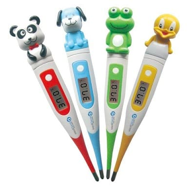
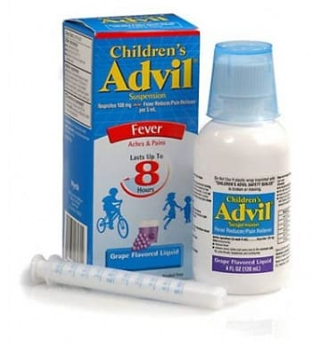
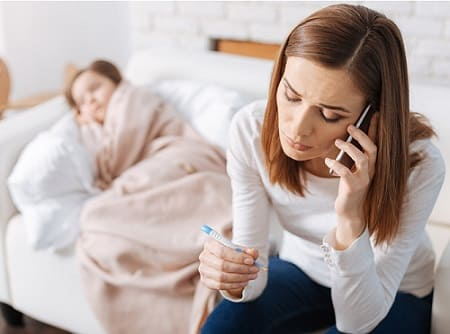
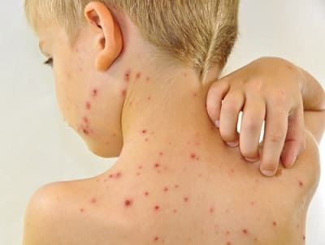

Если у вашего ребенка лихорадка, первое, что нужно сделать, — расслабиться. Не паникуйте. Повышение температуры тела, как правило, — признак того, что ваш ребенок борется с инфекцией. Большинство инфекцией не опасны и пройдут сами по себе. Сама по себе лихорадка не представляет собой проблемы. Это просто показатель того, что иммунная система вырабатывает химические вещества, борющиеся с микробами. Они поднимают температуру тела и помогают победить болезнетворные микроорганизмы. Лихорадка не обязательно означает, что состояние вашего ребенка вызывает опасения или что нужно срочно обращаться к врачу или в «Скорую помощь» для неотложного лечения. Пока оставайтесь дома, и позвольте нам рассказать, что вы можете сделать, чтобы помочь своему ребенку справиться с лихорадкой. Мы объясним вам, какие признаки действительно оправдывают неотложное посещение врача.
КАК ИЗМЕРИТЬ ТЕМПЕРАТУРУ У РЕБЕНКА
Для начала нужно убедиться, что вы правильно измеряете температуру своего ребенка.
Какой термометр использовать. Наиболее удобный и экономичный способ измерить температуру — обычным цифровым термометром, который ставят подмышку. Они быстрые, точные, недорогие и легкочитаемые. Обычные стеклянные или пластиковые термометры — более дешевый выбор, подходящий ребенку, который не против того, чтобы подержать его под мышкой несколько минут. Мы не рекомендуем ушные термометры для домашнего использования, так как они дорогие, более сложные в эксплуатации и могут давать погрешность при более высоких температурах.
Где измерять температуру. Подмышка — самое удобное место для фиксации термометра в любом возрасте, поэтому в большинстве случаев мы рекомендует именно этот способ. Измерение температуры в ротовой полости подходит старшим детям, которые знают, что нельзя кусать кончик термометра. Единственный случай, когда необходимо измерять ректальную температуру, — дети первых трех месяцев жизни. У таких маленьких детей лихорадка воспринимается более серьезно, поэтому требуется точность ректальной температуры. Для измерения ректальной температуры вставьте кончик термометра в анальное отверстие примерно на 13 мм. Перед оценкой показания термометров из обычного стекла или пластика подождите около 3 минут. Если вы используете цифровой термометр, просто дождитесь звукового сигнала.

Добавлять или не добавлять градус. Температура в ротовой полости является самым объективным отражением высоты лихорадки. Показания термометра в подмышечной части будут примерно на 1 градус ниже (поскольку это наружная часть тела), а ректальные — на 1 градус выше, чем в ротовой полости. В действительности нет необходимости прибавлять или отнимать градус. В конце концов, разница на самом деле не имеет значения. Сообщая своему врачу о лихорадке, просто скажите ему, каким методом вы измеряли температуру, и предоставьте всю математику ему, если возникнет необходимость.
Показатели температуры ребенка:
Как правило, невысокая лихорадка должна вызывать меньше всего волнения. Она обычно означает наличие заболевания, но, скорее всего, ничего страшного. Умеренная лихорадка точно означает наличие инфекции, и врач должен осмотреть ребенка в ближайшие 2—3 дня. Высокая лихорадка доставляет родителям больше переживаний и побуждает врачей относиться к ситуации более серьезно. Как бы то ни было, не всегда так происходит. Высокая лихорадка не обязательно означает, что происходит нечто более серьезное. Некоторые безобидные вирусы вызывают высокую температуру. Так что температура тела не является единственным фактором, который нужно принимать во внимание, диагностируя заболевание у ребенка. Мы предпочитаем оценивать общее состояние ребенка, как описано ниже.
ОБЩИЕ ПРИЧИНЫ
В большинстве случаев лихорадку вызывают вирусные или бактериальные инфекции. Вот некоторые способы, с помощью которых вы сможете определить причину лихорадки своего ребенка.
Вирусные инфекции. Вирусы имеют обыкновение с самого начала вызывать высокую лихорадку, которая затем резко спадает через 1—4 дня без назначения антибиотиков.
Бактериальные инфекции ушей и носовых пазух, бронхит, воспаление легких. Это наиболее распространенные бактериальные инфекции, сопровождающиеся лихорадкой.
Инфекция мочевого пузыря. У детей старшего возраста и подростков симптомы этой инфекции очевидны. Но у младенцев, которые не могут сообщить о проблемах с мочеиспусканием, не так легко это различить. Врачи обычно подозревают инфекцию мочевого пузыря, когда на протяжении нескольких дней никаких очевидных признаков вирусной или бактериальной инфекции нет, а лихорадка держится.
Ангина и тонзиллит. У детей 4 лет и старше сочетание лихорадки и больного горла чаще всего возникает в результате бактериальной инфекции, поддающейся лечению.
Диагностика этих бактериальных инфекций обычно может подождать до приемных часов вашего врача, за исключением случаев, указанных в разделе «Когда стоит беспокоиться».
ЛЕЧЕНИЕ
Самое главное правило — «лечить ребенка, а не лихорадку». Поскольку лихорадка не опасна (и даже может быть полезна), ее лечить не нужно. Лихорадка будет способствовать тому, что ваш ребенок будет чувствовать слабость, таким образом, он может отдыхать и поправляться быстрее. Конечно же, большинству родителей не нравится видеть ребенка несчастным, поэтому, если умеренная или высокая лихорадка действительно портит вашему ребенку настроение, вот как можно помочь:
Теплая ванна или прохладная салфетка. Это поможет сбить лихорадку и является хорошим первым шагом без применения медикаментов. Прохладные напитки также могут помочь и поспособствуют поддержанию уровни жидкости в организме вашего ребенка.
Медикаменты. Ацетаминофен (тайленол) и ибупрофен (нурофен, адвил, мотрин) — два лекарственных препарата, используемых для снижения лихорадки. Они также могут уменьшить любую боль, связанную с заболеванием. Их выпускают в виде капель для младенцев, сиропов или жевательных пастилок для детей и в виде таблеток. Ацетаминофен, в случае необходимости, также можно использовать в виде суппозиториев (под названием «Феверол»).

• Ацетаминофен можно давать каждые 4 часа. Первый раз ацетаминофена можно дать в двойной дозе при высокой лихорадке. Этот препарат может применяться для детей всех возрастов.
• Ибупрофен дают каждые 6 часов (двойная доза недопустима!). Ибупрофен также обладает противовоспалительным действием, таким образом, он будет более эффективным при лихорадке, сопровождающейся болями и ломотой в теле. Это лекарство подходит для детей старше 3 месяцев.
• Если у вашего ребенка рвота и он не может принимать лекарства внутрь, ацетаминофен можно ввести в форме суппозиториев (феверол).
Сочетание лекарств от лихорадки. Если одно лекарство помогает не очень хорошо или его действие слишком быстро заканчивается, вы можете смело комбинировать его с другими препаратами. Например, если вы дали своему ребенку ацетаминофен, но он не подействовал в течение часа и ребенок по-прежнему плохо себя чувствует, дайте ибупрофен (или наоборот). Если лекарство действует хорошо, но его эффект слишком быстро проходит, в случае необходимости вы можете дать другое средство. Однако лучше всего придерживаться употребления того или иного препарата. Не превращайте сочетание лекарств в привычку.
СОВЕТ ДОКТОРОВ СИРС: МЛАДЕНЦЫ МЛАДШЕ 3 МЕСЯЦЕВ Не давайте жаропонижающие препараты младенцам младше 3 месяцев без осмотра врача. Для начала он должен оценить, как ваш ребенок справляется без помощи лекарств. |
КОГДА НЕ СТОИТ БЕСПОКОИТЬСЯ
В первые день-два лихорадки, даже сильной, как правило, нет необходимости обращаться к врачу (если лихорадка не сопровождается каким-либо другим признаком серьезного заболевания из описанных ниже). Вот признаки того, что, возможно, лихорадка вашего ребенка — это просто составляющая несерьезного заболевания и вы можете безопасно наблюдать и лечить своего ребенка дома:
КОГДА ОБРАЩАТЬСЯ К ВРАЧУ
Если у вашего ребенка наблюдаются следующие признаки, то он нуждается в медицинском обследовании в течение ближайших 24 часов:
КОГДА СТОИТ БЕСПОКОИТЬСЯ И ОБРАЩАТЬСЯ К ВРАЧУ
Вот признаки того, что лихорадка у вашего ребенка требует немедленного обращения к врачу, звонка или СМС-сообщения в не приёмные часы или визита в отделение неотложной помощи.
Младенцы младше 3 месяцев. Любая лихорадка выше 38,3°С (независимо от метода измерения) у младенцев младше 3 месяцев считается экстренной ситуацией, так как у них незначительные инфекции могут быстро стать серьезными. Младенцев младше 6 недель госпитализируют для обследования. Младенцы от 6 недель до 3 месяцев должны быть обследованы для исключения инфекций, но нахождение в больнице требуется не всегда.

СОВЕТ ДОКТОРОВ СИРС: ПРИСЛУШИВАЙТЕСЬ К СВОЕЙ ИНТУИЦИИ Если лихорадка вашего ребенка подходит под приведенные выше описания, но ваша интуиция подсказывает вам, что, возможно, происходит что-то серьезное, прислушайтесь к себе. Лучше чувствовать себя в безопасности, чем потом жалеть. Ничего страшного не случится, если вы отведете ребенка к врачу и услышите от него, что это безвредный вирус. |
Менингит. Любая лихорадка, сопровождающаяся признаками менингита: сильной головной болью, ригидностью шеи и/или затылка, болью при наклоне головы вниз и вперед, рвотой или чувствительностью к свету, является экстренной ситуацией.
Признаки инфекции мочевых путей. Боль в средней или нижней части спины, рвота, болезненное или частое мочеиспускание требуют немедленного внимания.
Сыпь в виде красных точек. Лихорадка, сопровождающаяся появлением на коже мелкоточечной красной или лиловой сыпи, которая не бледнеет (не пропадает) при натяжении кожи, опасна.

Отсутствие реакции на лекарства. Высокая лихорадка, которая хотя бы немного не спадает через 2 часа после принятия лечебных мер, описанных здесь, требует визита к врачу для обследования.
Фебрильные судороги. Если на фоне лихорадки наблюдаются судороги, звоните в «Скорую помощь» или езжайте в отделение неотложной помощи.
Раздражительность. Термин подразумевает больше, чем просто нервозность. Раздражительный ребенок будет плакать часами, почти не проявляя интереса к окружающим, или не идет на контакт с теми, кто о нем заботится, и его практически невозможно успокоить. Это может быть признаком серьезной инфекции.
Апатия. Под этим мы подразумеваем больше, чем ситуацию, когда ваш ребенок ведет себя несколько необычно или просто хочет спокойно лежать у вас на руках. Настоящая апатия означает, что младенец или ребенок с трудом двигается, не реагирует на ваш голос и не идет на контакт глазами. Это наверняка означает, что дело в чем-то серьезном.
Здоровье ребенка от докторов Сирс / Сирс У. и др.